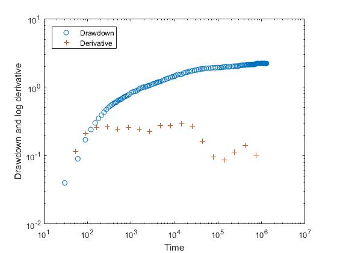
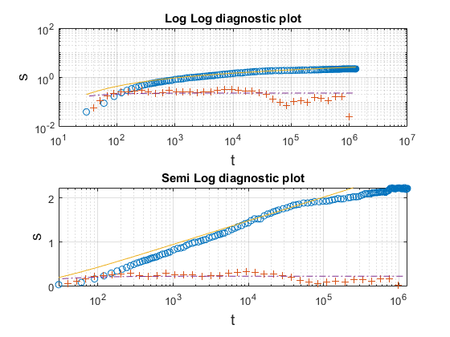
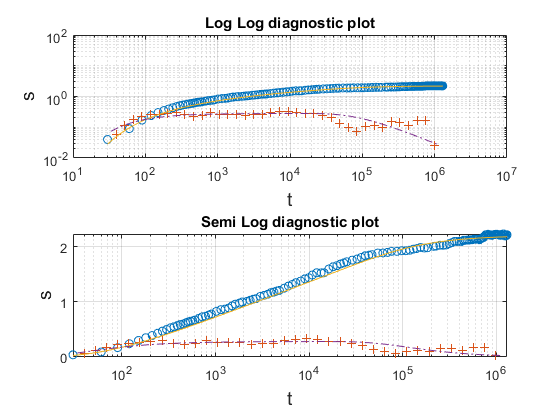
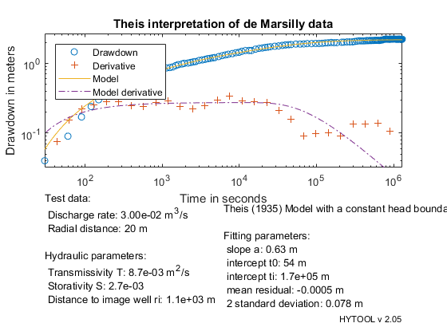

Theis (1941) interpretation.
This is a demonstration of the interpretation of a pumping test in a confined aquifer with a boundary effect using the Theis (1941) solution.
Copyright 1998-2007 - Philippe Renard & Co. - GNU GENERAL PUBLIC LICENSE
Contents
Load the data
The data set for this example has been provided by: G. de Marsily, cours DEA Paris 6, "Aquifère côtier de Nefza, Tunisie". Piezometer A3Bis
Let us load the data in the matlab workspace with the ldf function from hytool and plot the data.
[t,s]=ldf('thc_ds1.dat'); diagnostic(t,s) % The diagnostic plot shows a behavior that indicates a possible constant % head boundary effect. We will therefore interpret the data with thc % model.
Model parameter guess
The parameters allowing to control the Theis (1941) model are the slope and intercept of the Jacob straight line that one can observe at intermediate time, and the time at which this straight line interesects the plateau corresponding to the stabilization of the drawdown.
The function thc_gss allows to estimate these numbers, we then check with trial if the first guess is acceptable.
p0=thc_gss(t,s); trial('thc',p0,t,s) % The figure shows that the slope of the straight line is too small, the % initial time t0 is to small as well, and the plateau is not really % reached.
To improve the first guess, we modify manually the values and check them graphically.
p0=[0.65,80,2e5];
trial('thc',p0,t,s)
 Automatic fit
Once, we have an acceptable first guess, we run the non linear optimization fit and again check if the results are correct or not.
p=fit('thc',p0,t,s); trial('thc',p,t,s)
Norm of Norm of
Iteration SSE Gradient Step
-----------------------------------------------------------
0 0.568497
1 0.235004 10.7004 37145
2 0.198092 0.201581 2407.41
3 0.198074 0.000885323 590.618
4 0.198074 2.56024e-05 109.589
5 0.198074 7.61479e-07 19.2892
6 0.198074 1.31806e-08 3.3898
Iterations terminated: relative change in SSE less than OPTIONS.TolFun
Reporting the results
As the fit observed in the previous graph was good, we consider that the paramaters are well identified and that we can now report the interpretation.
q=0.030; % Pumping rate in m3/s r=20; % radial distance in m thc_rpt(p,t,s,[q,r],'Theis interpretation of de Marsilly data')
The estimated transmissivity is 8.7e-3 m2/s and the storativity is 2.7e-3, the distance to the image well is 1100 m. These numbers are very close to the values estimated by de Marsilly:
T = 8.4 e-3 m2/s S = 2.8 e-3 ri = 1050 m